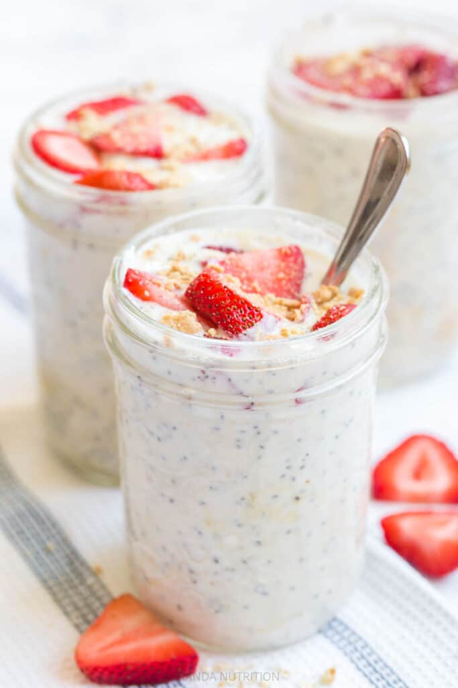

Overnight Strawberry Cheesecake Oats

Indulge in the delightful essence of a classic dessert with the Strawberry
Cheesecake Protein Overnight Oats.
Creaminess takes center stage, as the casein-infused oats form a velvety
base, reminiscent of a cheesecake's texture. A swirl of sugar-free
strawberry jam introduces bursts of fruity sweetness that complement the
delicate tang of plain skyr. Fresh strawberries, vibrant and juicy,
punctuate the dish, lending a pop of color and a refreshing bite that
harmonizes seamlessly with the creamy ensemble.
Macros
- Calories: 451
- Carbs: 64g
- Fats: 5g
- Protein: 35g
Ingredients
- 50g oats
- 15g casein vanilla
- 150g skyr
- 50g strawberry jam
- 150g strawberries
- 100g water
- salt
Instructions
-
In a bowl, combine 50 grams of oats and 15 grams of vanilla protein
powder.
- Mix in 50 grams of water and stir until combined.
- Add a sugar-free strawberry jam (around 50 grams) to the mixture.
- Stir in 150 grams of plain skyr or non-fat yogurt.
-
Add a pinch of salt and 100 grams of water to the mixture and mix until
smooth.
-
Slice up 150 grams of fresh strawberries and add them to the mixture.
- Stir everything together until well combined.
- Close the lid of the bowl and refrigerate overnight.
-
In the morning, enjoy your creamy Strawberry Cheesecake Protein
Overnight Oats!
(Back to top)
(HomePage)